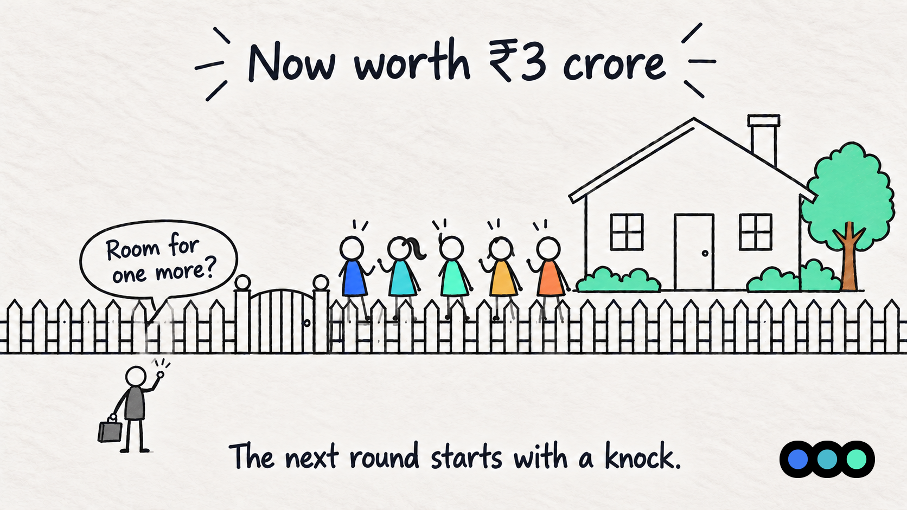
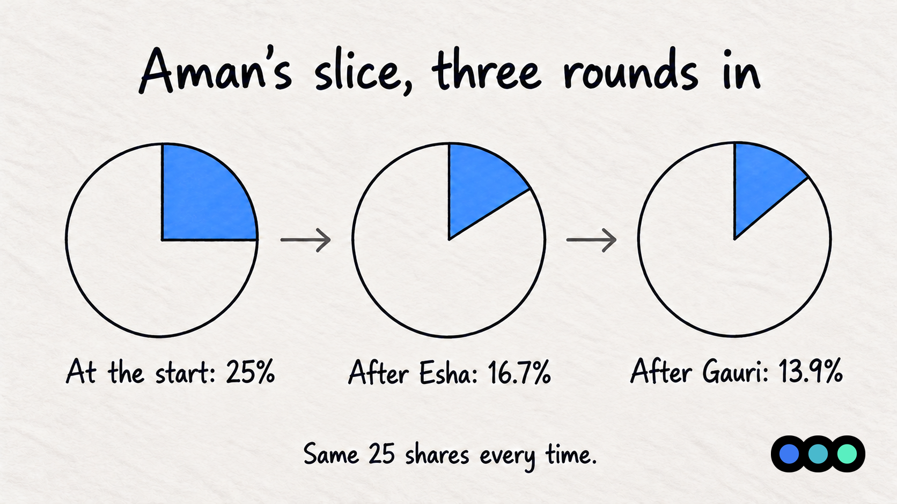
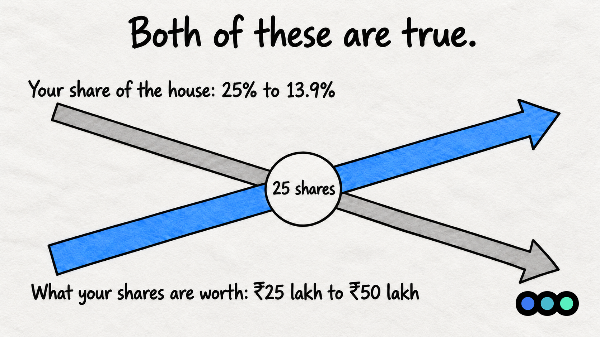
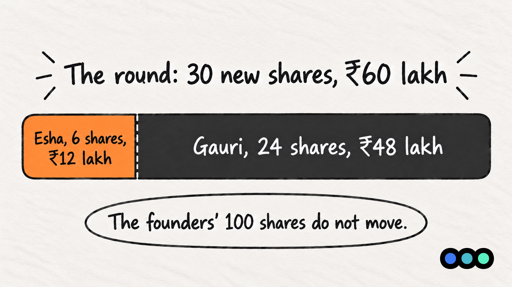

Startup Concepts · Finance for the Fundraising-Curious, Part 4
Someone Else Wants In
Gauri's Round

TL;DR
A second round dilutes everyone already on the cap table, including your ESOP pool and your first investor. Your percentage falls again, but if the price went up, your shares are worth more than before. An investor with pro-rata rights can buy enough of the new round to hold their percentage, and when the round size is fixed, that comes out of the new investor's allocation rather than yours.
The House Is Worth More Now
At the end of Part 3 the house had 150 shares. The four friends held 100 between them, 25 each. The option pool held 20, with 8 of those granted to Farhan. Esha held 30, which was her 20%.
A few years pass. The renovation paid off, the area improved, and the house is now worth ₹3 crore before anyone new puts money in. That is the new pre-money valuation.
The share price follows from it. ₹3 crore divided by the 150 shares that already exist is ₹2,00,000 a share, double the ₹1,00,000 Esha paid. This is what founders mean by an up round: the price per share is higher than it was last time.
Then Gauri knocks. She likes the house, she has ₹60 lakh, and she wants in.
What Gauri's Cheque Does
At ₹2,00,000 a share, ₹60,00,000 buys 30 new shares. The house issues them, exactly as it did for Esha. There are now 180 shares, and the house is worth ₹3 crore plus ₹60 lakh, a post-money valuation of ₹3.6 crore.
Here is the whole cap table, before and after. For now, assume Gauri takes all 30 shares.
| Holder | Shares before | Before | Shares after | After |
|---|---|---|---|---|
| Aman | 25 | 16.7% | 25 | 13.9% |
| Bhavna | 25 | 16.7% | 25 | 13.9% |
| Chirag | 25 | 16.7% | 25 | 13.9% |
| Divya | 25 | 16.7% | 25 | 13.9% |
| Option pool | 20 | 13.3% | 20 | 11.1% |
| Esha | 30 | 20.0% | 30 | 16.7% |
| Gauri | 0 | 0% | 30 | 16.7% |
| Total | 150 | 100% | 180 | 100% |
Percentages are rounded to one decimal place.
Notice who moved. Everyone did. The four friends, the pool and Esha all fell by the same proportion, because the only thing that changed is that there are more shares to divide by. Esha, who paid for her 20% two rounds ago, is now at 16.7% like Gauri. The pool went from 13.3% to 11.1%, which means Farhan's 8 options are a smaller slice of the house than they were on the day he was granted them.
That last point catches founders out. A pool is not protected from the next round. If you want it topped back up, someone has to pay for that, and in a pre-money pool it is the existing shareholders.
Three Rounds In
Follow one person through the whole story. Aman has held the same 25 shares since the four friends bought the house.

At the start he owned a quarter of the house. After Esha's round he owned 16.7%. After Gauri's he owns 13.9%. He has not sold a single share.
Now look at what those same 25 shares are worth.
| Moment | Share price | His ownership | What his 25 shares are worth |
|---|---|---|---|
| The four friends buy the house | ₹1,00,000 | 25% | ₹25,00,000 |
| After Esha's round | ₹1,00,000 | 16.7% | ₹25,00,000 |
| After Gauri's round | ₹2,00,000 | 13.9% | ₹50,00,000 |

Both of those lines are true at once. His share of the house has nearly halved. The value of what he holds has doubled. That is the whole argument for raising: you are trading a percentage of something small for a smaller percentage of something bigger.
The middle row is worth a second look. After Esha's round Aman's percentage fell but his value did not move, because the pool sat in the pre-money and held the price at ₹1,00,000. That was Part 3's point. Gauri's round is different: the price went up, so this time the dilution came with something in return.
Esha's Right to Keep Her 20%
Esha does not have to accept 16.7%. When she invested, her term sheet gave her pro-rata rights: the right, not the obligation, to take part in future rounds so she can hold her percentage.
The arithmetic is short. For Esha to own 20% of the 180 shares that will exist after the round, she needs 36. She already has 30. So she needs 6 of the 30 new shares, which cost her 6 × ₹2,00,000 = ₹12 lakh.
The round is still ₹60 lakh. Esha puts in ₹12 lakh of it, so Gauri puts in ₹48 lakh and gets 24 shares instead of 30.

Now compare the two versions of the same round.
| Holder | Gauri takes all 30 | Esha takes 6 of the 30 |
|---|---|---|
| The four friends, together | 55.6% | 55.6% |
| Option pool | 11.1% | 11.1% |
| Esha | 16.7% | 20.0% |
| Gauri | 16.7% | 13.3% |
| Total | 100% | 100% |
Read the first two rows. The founders are on 55.6% either way, and so is the pool. Esha exercising her pro-rata rights costs the founders nothing. It comes out of Gauri's allocation.
That is worth knowing before the conversation, because it is often framed as though an existing investor topping up is bad news for the founders. On a round of a fixed size, it is not. It is a negotiation between your old investor and your new one over who gets how much of the same ₹60 lakh.
The caveat is the phrase "fixed size". If Gauri insists on her full 30 shares and Esha also takes her 6, the round grows to 36 new shares and ₹72 lakh. Then there are 186 shares, and the founders really are diluted further. Who absorbs a pro-rata request is decided by whether the round size or the new investor's allocation gives way.
Napkin Math Box
The next round, worked through on the house.
| What you want to find | Formula | House example |
|---|---|---|
| Share price this round | Pre-money ÷ Existing shares | ₹3 Cr ÷ 150 = ₹2,00,000 |
| New shares issued | Amount raised ÷ Share price | ₹60 L ÷ ₹2,00,000 = 30 |
| Post-money valuation | Pre-money + Amount raised | ₹3 Cr + ₹60 L = ₹3.6 Cr |
| Your ownership after | Your shares ÷ Total shares | 25 ÷ 180 = 13.9% |
| Shares to hold your percentage | (Your % × New total) − Your shares | (20% × 180) − 30 = 6 |
In India
- Where a company issues new shares to existing shareholders in proportion to what they already hold, the Companies Act, 2013 treats it as a rights issue and sets out the process and notice periods. [VERIFY]
- Pro-rata rights in a venture term sheet are contractual. They sit alongside the statutory position, and the two are not the same thing. [VERIFY]
- A priced round where a foreign investor participates has pricing rules of its own under FEMA, which apply to the new investor and to any existing investor topping up. [VERIFY]
Key Terms
Everything this post defined, in one place.
- Up round
- A round priced higher per share than the last one. The house went from ₹1,00,000 a share to ₹2,00,000, so Gauri's round is an up round.
- Pro-rata rights
- The right, not the obligation, for an existing investor to take part in a future round so they can hold their percentage. Esha needs 36 of 180 shares to stay at 20%, holds 30, so buys 6.
- Round size
- How much the company is raising in total. It decides who absorbs a pro-rata request: hold the size fixed and the new investor's allocation shrinks, let it grow and the founders are diluted further.
- Stacked dilution
- What repeated rounds do to a holding that never changes. Aman's 25 shares went from 25% to 16.7% to 13.9% without his ever selling one.
This post is general information, not financial, legal or tax advice. It is written to help founders recognise the terms they will meet when they raise. How the rules apply depends on how your round is structured and who is investing, so check your own deal with your CA or company secretary before you sign.
Common Founder Mistakes
- Reading a falling percentage as a loss. On an up round your slice shrinks and your value rises. The number to watch is the share price, not the percentage.
- Not knowing who holds pro-rata before you open the round. It changes how much of the round is actually available to a new investor, and it is better to know that before you promise an allocation.
- Forgetting the pool dilutes too. Farhan's 8 options went from 13.3% of the house to 11.1% without anyone telling him. If you intend to keep hiring, the pool needs topping up, and that costs someone.
- Letting the pool be topped up in the pre-money again. It is the same move as Part 3, and it has the same effect: the founders pay for it, not the new investor.
- Assuming an up round means nobody objects. Your earliest investor may care more about holding their percentage than about the higher price, which is exactly what pro-rata is for.
Planning the round after this one?
Most of what decides your next round is set before you open it: who holds pro-rata, how big the pool needs to be, and what the price has to clear for the story to hold together.
Prologue works with founders before they raise, on the pitch deck, the financial model and the cap table investors will test. If you are planning a round, talk to us.

About Sakshay Upadhyay
Sakshay Upadhyay is an Investment Associate at Earlyseed Ventures and a Warwick Business School alumnus. With over four years in venture capital finance, Sakshay has worked with more than 30 founders on fundraising strategy and financial modelling.